SEMESTER PROJECT REPORT
“Playable Pages” — Muhammad Zohair Shaikh
Game Developer · BS Computer Science, NED University, Karachi
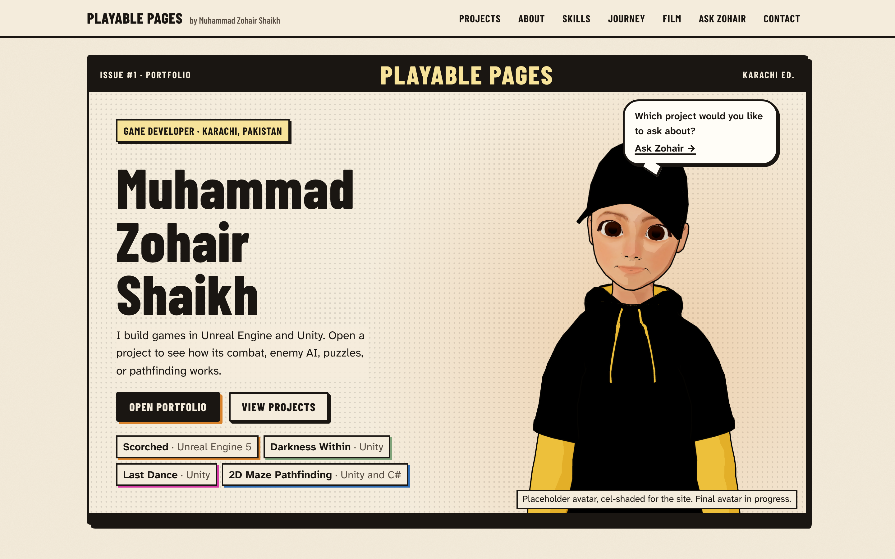
Report date: 23 November 2026. This report describes what was built and tested; items that could not be completed in the build environment are marked as pending with the exact dependency.
Build a portfolio that presents Zohair's game projects as a 3D comic book: visitors open a cover, read illustrated project spreads, play gameplay inside the panels, talk to a cel-shaded avatar through a retrieval-augmented chatbot, and write to him through a working contact form. The site must remain readable, accessible and fast, and must not overstate any fact beyond his résumé.
| Requirement | Implementation | Status |
|---|---|---|
| Comic-book art direction, per-game palettes | Paper/ink tokens, imperfect panel borders, hard shadows, halftone; one or two accents per game; Barlow Condensed + Atkinson Hyperlegible Next | Done |
| Signature interaction (inked panel → first frame of clip) | GameplayPanel: halftone-mask dissolve to the video whose first frame equals the poster; border fixed; one active clip; pause on page close; resume position | Done with dev media; real clips pending |
| Chapters, direct links, mobile reading order | React Router URLs per chapter and per panel anchor; single-column phone layout; skip link, visible focus, reduced motion | Done |
| Cel-shaded supplied avatar, configurable | toon.ts + config/avatar.ts; OutlineEffect ink line; pre-rendered chat portrait | Done (placeholder) |
| 30–60 s After Effects film | Composition plan + 45 s animatic in the site with captions and transcript | AE project and render pending |
| Working RAG chatbot with citations | fastembed + FAISS hybrid retrieval, Claude structured answers, server-side grounding guards | Built; live answers pending API key |
| Contact form with real delivery | SMTP or Resend; fixed recipient; Reply-To; honeypot; rate limit | Built; real send pending credentials |
| Deployment, README, report | Dockerfile + render.yaml; README; this report | Live URL pending hosting |
Frontend: Vite + React 18 + TypeScript. Text, captions, forms and navigation are semantic HTML; WebGL (three.js r169 via React Three Fiber) is used only for the avatar and is lazy-loaded, so first paint costs 73 KB gzipped JS and the cover works without WebGL (portrait fallback). Backend: Flask 3 under gunicorn exposes /api/chat, /api/contact and /api/health, and serves the built site in production (single origin, no CORS). Content: content/portfolio.json is the single source of truth for both the pages and the knowledge index, so a citation anchor can never point to a panel that doesn't exist; a test enforces this.
| Request | Path |
|---|---|
| Page view | Browser → Flask static (frontend/dist, SPA fallback) → React renders spreads from portfolio.json; avatar chunk loads on demand |
| Chat | Ask page → POST /api/chat → rate limit → hybrid retrieval (FAISS + IDF) → Claude JSON answer → citation guards → answer + panel links, or explicit error |
| Contact | Letter form (client validation) → POST /api/contact → honeypot, rate limit, server validation → SMTP/Resend → success only when the provider accepts |
Each spread has one dominant panel and supporting panels, composed differently per game: Scorched (sandstone/amber, three action beats for the combo, paired enemy panel, HUD detail), Darkness Within (desaturated green, tight gutters, a riddle-or-inventory choice that reveals the NavMesh threat; footage is never tinted), Last Dance (evidence board under magenta/violet; pinned clue cards; outcome sealed by default) and 2D Maze (graph paper; explicit Step 1 → Step 2 order; interactive Dijkstra explanation labelled as separate from the Unity project). Speech bubbles are used only for people (avatar, visitor); rectangular captions explain mechanics; sound-effect lettering appears twice (the third hit, the threat reveal).
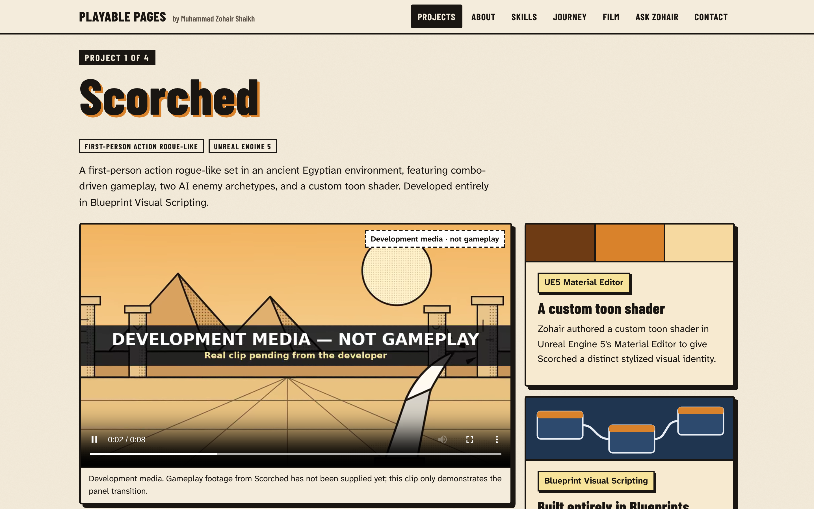
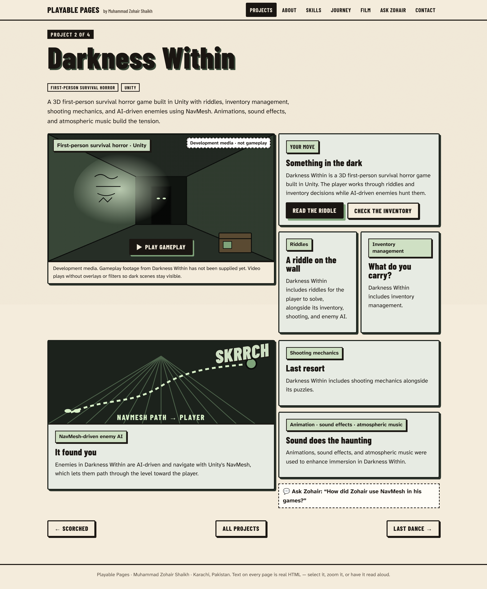
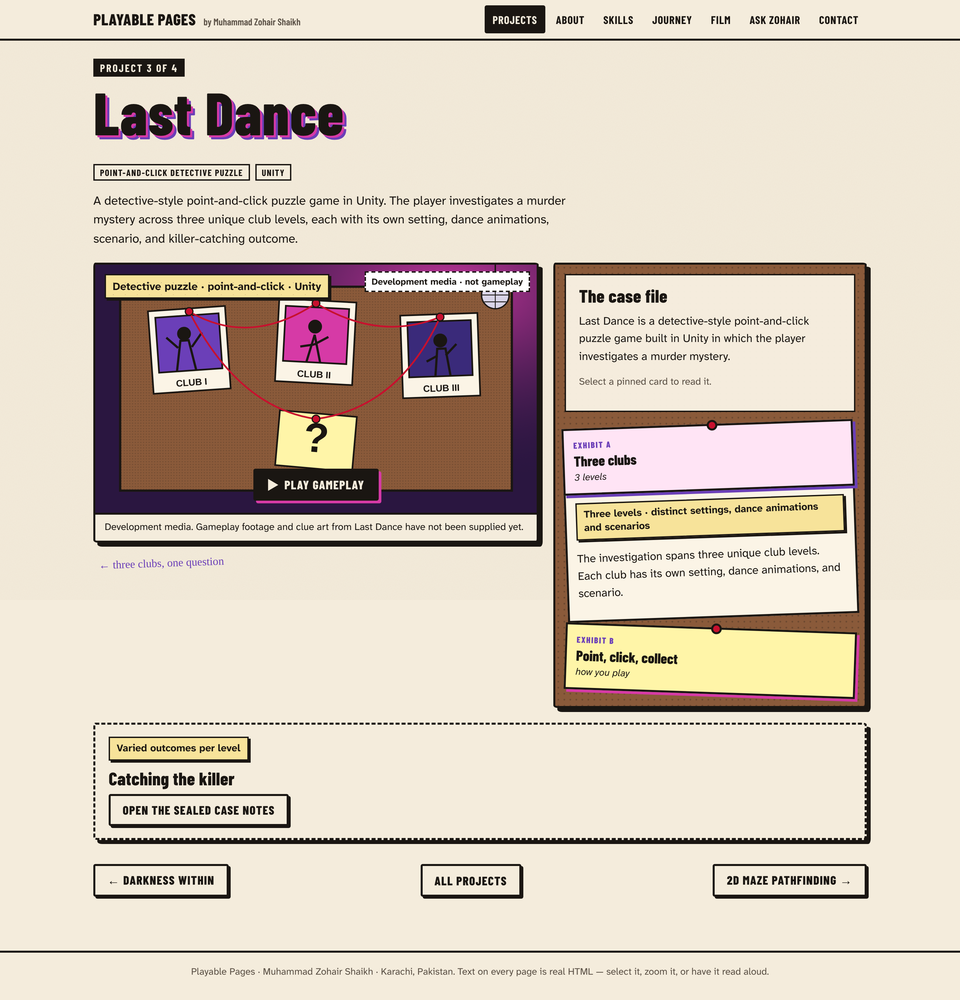
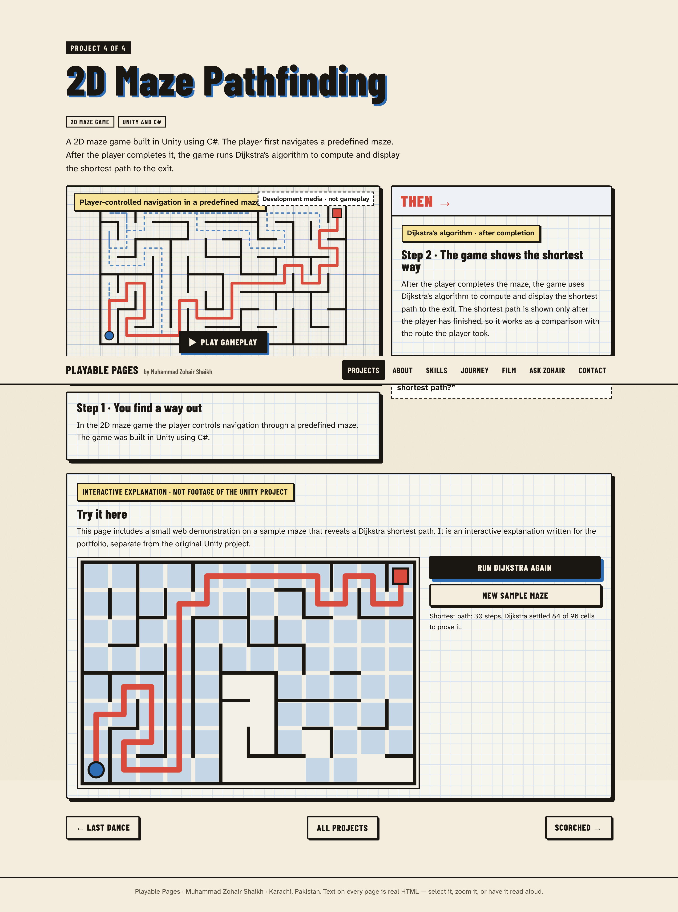
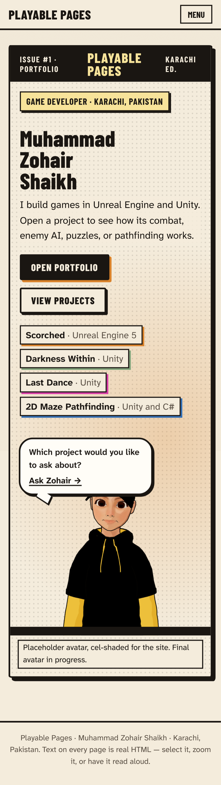
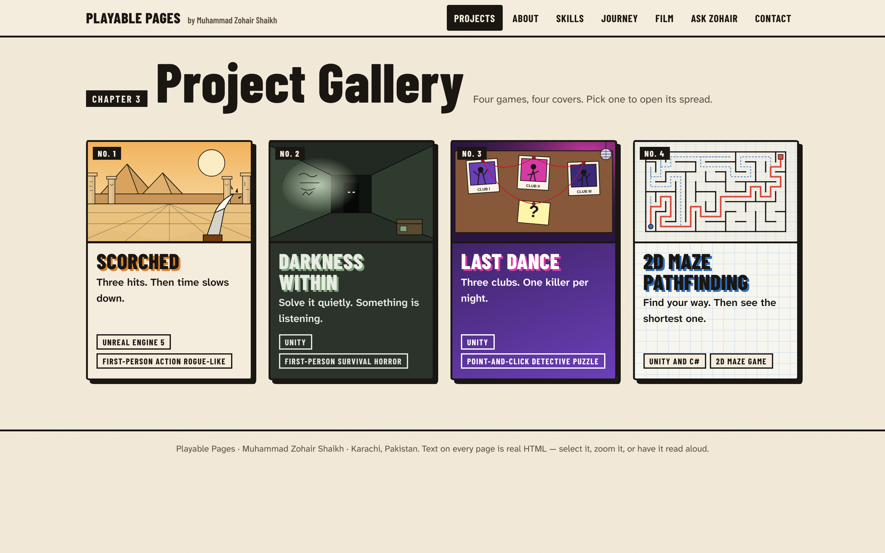
Chapters: Cover, About, Skills (skills with evidence link to the panel that demonstrates them, e.g. UE5 Material Editor → Scorched toon shader), Project Gallery and four spreads, Journey (NED education, coursework, A/O levels under a disclosure, award styled with a rosette vs participation stamp), Film, Ask Zohair, Contact. Page turns are CSS 3D transforms; pointer rotation affects only the avatar; every motion respects prefers-reduced-motion.
Inspection of the supplied Aariz_Hat.glb (35.7 MB, 18 materials, 21 embedded textures, no missing files) found: a scale of ~0.02 units (normalised at runtime); a single zero-length clip that holds the authored pose (the bind pose is an A-pose); hoodie material with default metallic = 1 (renders black under PBR without an environment); transparency baked into the hair and eyelash diffuse alpha. The web copy (1.4 MB) only re-encodes textures (1024² WebP) and prunes unused UV sets; vertex count is unchanged (9,283). applyToon() swaps each material for MeshToonMaterial with the original map, colour, alpha and side; a 3-band RGB gradient gives a tinted shadow band; OutlineEffect draws a skinned ink outline whose thickness differs for cover and portrait; eyes, lashes, teeth and tear lines are excluded from the outline. All controls live in toonArt; model path, framing, pose clip and animation names live in avatarConfig.
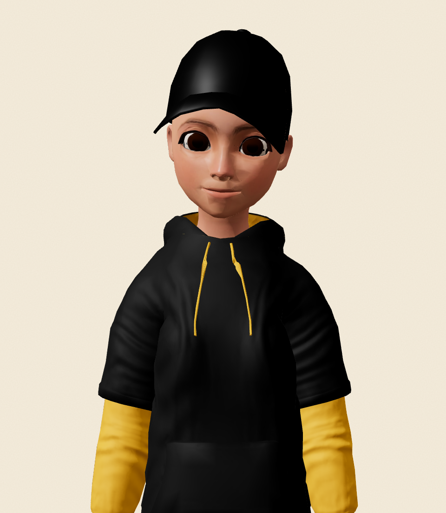
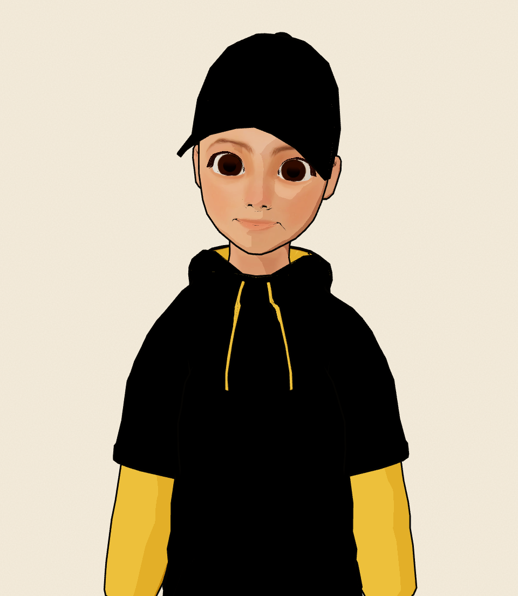
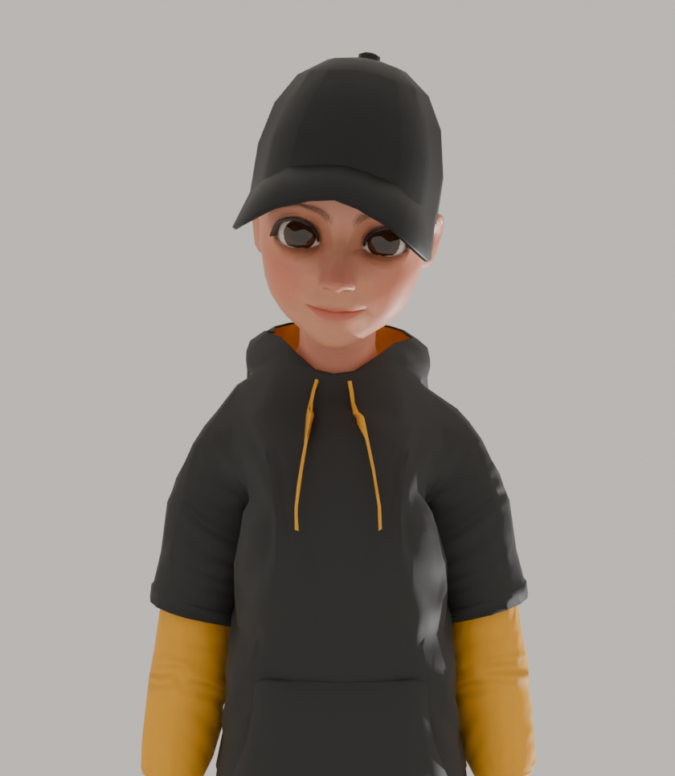
The Blender comparison exposed a real fidelity bug: the browser originally showed the A-pose. The loader now samples the authored pose clip, so the browser matches Blender.
After Effects was not available in the build environment. film/AFTER_EFFECTS_PLAN.md specifies the timed compositions, named layers, folder structure, typography, transitions, audio rules and asset list. A 45.0 s animatic built from the storyboard (film/animatic/build.sh) is embedded in the 21:9 film panel with native controls, WebVTT captions and a transcript, and is labelled as an animatic on screen and on the page. Pending: the .aep, collected media, licensed music and the final H.264 render.
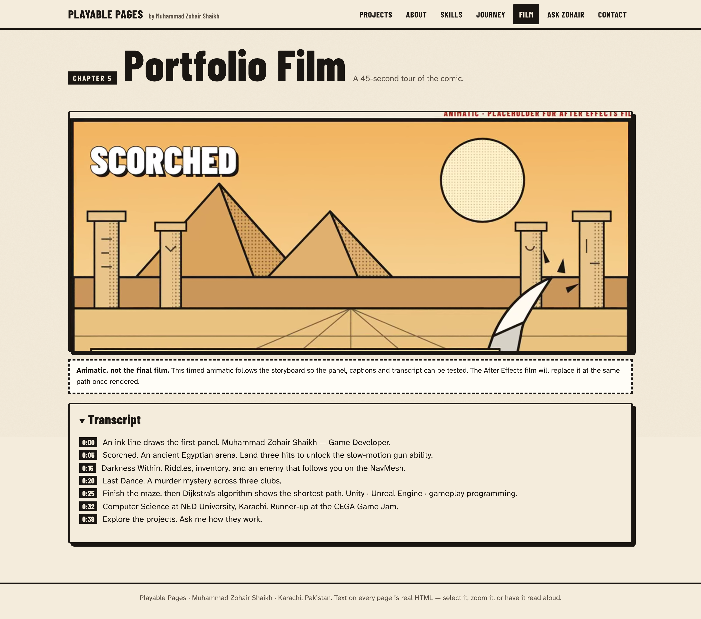
39 chunks (one per panel or heading), each carrying a title, section id and URL anchor. Project chunks are prefixed with the project name and engine so mechanics stay attached to the right game. Embeddings: BAAI/bge-small-en-v1.5 (local ONNX) in FAISS IndexFlatIP; rebuilt by python ingest.py and at Docker build time. Dense-only retrieval missed the NavMesh panels for “How did Zohair use NavMesh in his games?”, so an IDF-weighted keyword score was added (hybrid retrieval), and questions that name several projects pull evidence from each. Claude (claude-opus-5-5, low effort, structured JSON) answers only from the sources; the server drops citations that were not retrieved, downgrades uncited answers to “insufficient”, and maps refusals and provider failures to explicit errors. Keys never leave the server.
| Type | Question | Retrieval (top 4) | Expected citation | Answer |
|---|---|---|---|---|
| Factual | How does the three-hit combo work in Scorched? | ✅ scorched.slow-motion, scorched.combo, scorched.hit-detection, scorched.arena | /projects/scorched#slow-motion, /projects/scorched#combo | pending |
| Factual | Which game jam did Zohair finish as runner-up in? | ✅ journey.cega, journey.indus, journey.ned, profile | /journey#cega | pending |
| Factual | When does the maze game show the shortest path? | ✅ maze-pathfinding.dijkstra, maze-pathfinding.overview, maze-pathfinding.demo, maze-pathfinding.navigate | /projects/maze-pathfinding#dijkstra | pending |
| Cross-project | How did Zohair use NavMesh in his games? | ✅ skills.game-dev, about.systems, darkness-within.threat, scorched.enemies | /projects/scorched#enemies, /projects/darkness-within#threat | pending |
| Cross-project | Compare the enemy AI in Scorched and Darkness Within. | ✅ darkness-within.threat, about.systems, darkness-within.riddle, scorched.enemies | /projects/scorched#enemies, /projects/darkness-within#threat | pending |
| Unsupported | How many copies did Scorched sell? | ✅ scorched.slow-motion, scorched.overview, scorched.arena, scorched.combo | — | pending |
| Unsupported | What game did Zohair make at the CEGA Game Jam? | ✅ journey.cega, journey.indus, profile, journey.ned | — | pending |
Every expected citation URL was opened in Chromium and verified to scroll to and focus its panel. Live answers were not generated: no Anthropic API key was available. Rerun python evaluate.py with the key to fill the answer columns.
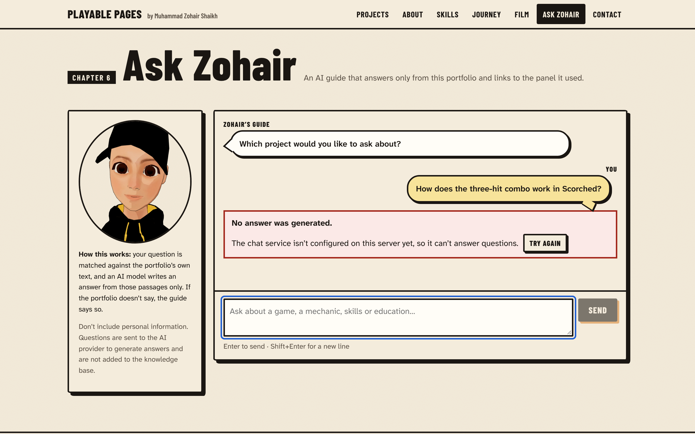
The letter-style form validates name (2–100), email (format, ≤254), subject (3–150) and message (20–5000) on both client and server, gives field-level messages, moves focus to the first error, and keeps the draft in the browser until it is sent. The server rejects line breaks and control characters in header fields, ignores a hidden honeypot field, rate-limits to 5 letters per hour per IP, sends to the fixed CONTACT_TO_EMAIL from a verified MAIL_FROM with the visitor in Reply-To, and logs only a reference id (no names, emails or message bodies). Success is shown only when SMTP or Resend accepts the message; development mode says “Not emailed”.
Pending: real delivery evidence requires mail credentials and the deployed site.
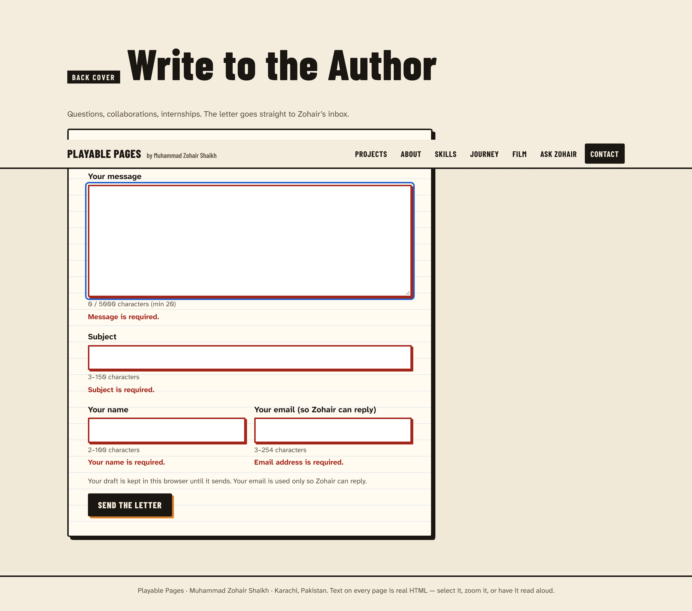
| Suite | Result |
|---|---|
| Frontend unit (vitest): Dijkstra optimality vs BFS on 4 seeds, wall-respecting paths, validation rules | 10/10 pass |
| Backend (pytest): validation, header injection, honeypot, rate limit, dev-mode honesty, SMTP failure, provider errors, citation guards, comparison retrieval, anchor ↔ panel consistency, privacy of chunks | 18/18 pass |
| E2E slice (Playwright, production build, desktop 1366×900 + Pixel 7): cover usable before 3D, Scorched dissolve → playing clip, controls, back-nav resume, deep-link focus, maze demo, no horizontal scroll, no page errors | Pass |
| E2E forms: chat greeting/starters/keyboard send/explicit provider error; contact validation, focus, dev-mode honesty, draft preserved | 10/10 checks pass |
| Citation links (7 expected targets) | All land on and focus the panel |
The Dockerfile builds the frontend, installs the backend, rebuilds the vector index from the committed content, and runs gunicorn on $PORT; render.yaml declares one web service with health check /api/health. Secrets are set in the host dashboard only. Pending: no hosting account or GitHub remote was available, so there is no live URL yet; the post-deploy checks are listed in the README.
Aariz_Hat.glb: supplied by the owner; it includes a “WASL LOGO” texture whose public use should be confirmed.